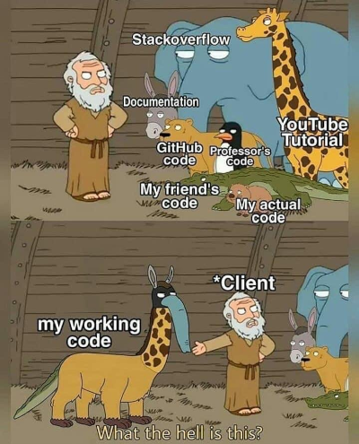

Procedural programming in a nutshell
Published on 2021-03-30. Modified on 2021-04-01.
In my last article No more object oriented programming with PHP I addressed some of the real-life problems that object oriented theory and implementation creates. In this article we'll take a look at some of the benefits of procedural programming and what you need to do, to do it in a proper manner, whether it's PHP, C, or some other programming language.
Table of content
- Introduction
- Someone got confused in PHP land
- Good and correct principles
- What about functional programming?
- Understand how the computer works
- Pragmatic procedural programming
- Procedural programming in PHP
Introduction
If you come from an object oriented background and have never studied procedural programming you have most likely only heard bad things about procedural programming, but procedural programming is not bad, it's how some people sometimes code and structure their application that's bad.

The same cannot be said about object oriented programming because even if you try to do it well, object oriented programming isn't leaving much freedom to the programmer. Object oriented programming languages has all this theoretical cruft build right into the language. Combined with the corporate media hype, that permeates the industry on almost all levels, from books to academic curriculum to self-promoted hipsters on YouTube, everyone gets flooded with a stream of information about all the boo-boos you must not do.
And because the environment in academia is often surrounded by very polarized attitudes and opinions, people tend to become religious about these things.
That is not to say that some of the ideas from object oriented programming isn't any good, some of the ideas are very good. However, the benefit is very often so completely drowned in theory, design patterns and the huge mess of class dependency problems, that follows in the wake of object oriented programming, that it is not worth the hassle at all.
By following good pragmatic and sensible principles and doing simple procedural programming, you will become much more productive and enjoy programming more, because your brainpower is now spend solving real programming problems rather than figuring out which stupid design pattern your next lines of code needs to match.
Someone got confused in PHP land
In PHP land someone was either drunk or very confused because they somehow was convinced that the MVC pattern was a good fit for web applications even though the fact is that you cannot do MVC with PHP and that MVC only relates to GUI applications on the desktop.
Yet, somehow this ridicules idea became so widespread that every single framework, CMS and what not now proudly boasts about how they all implements the MVC pattern.
In the wake of this bloober, the next naturally follows. Because you believe you're doing MVC you now somehow need a single front controller to control the views and fetch data from the model, etc. But despite the fact that the very architecture you run your application on is screaming in your face that it is the web server that is the front controller, you invent and stuff yet another much less efficient and much less effective abstraction of a front controller, done entirely in PHP, on top of the real front controller.
And then comes all the rest of the poop. What belongs in the controller? What should go into the view? Oh, wait, you cannot stuff this into that because that is the model! Oh, wait a second the holy gang of four book has a pattern for that, but wait, it doesn't quite fit. Hmmm. Well it must fit! Take it apart and MAKE IT FIT AT ANY COST!
Remove the "object oriented part" from programming and you automatically remove all the twaddle that follows. Your brain is now completely free to do some actual programming.
Good and correct principles
The things that constitutes the good parts of object oriented programming theory, like avoiding global mutable state, and declaring and using properties correctly (because of the protection that provides), etc., is basically just plain and simple good programming style in any programming language.
Every experienced procedural programmer avoids global mutable state, and he also avoids having function spaghetti, which is functions within functions within functions, and he has a clear naming scheme and a coding style he is following. The only difference is that he doesn't go over board!
We have rules and regulations in society, but guidelines are named "guidelines" or "best practice" for a reason. It means that these things aren't carved out in stone, and they are definitely not meant to be followed blindly. Secondly, and this is perhaps the most important, best practice has context.
It makes sense to stop walking in the city when there is a red light, but it makes less sense if you're out in the country, standing at the road at the middle of night, and there isn't a living creature in miles view in any direction, yet you patiently stand there waiting for the light to change into green.
What about functional programming?
Functional programming is sometimes treated as synonymous to pure functional programming, a subset of functional programming which treats all functions as deterministic mathematical functions, or "pure functions". When a pure function is called with some given arguments, it will always return the same result, and cannot be affected by any mutable state or other side effects. Proponents of purely functional programming claim that by restricting side effects, programs can have fewer bugs, be easier to debug and test, and be more suited to formal verification. However, while that is certainly true, the fact is that this is really just good procedural programming style! There is absolutely nothing special or new about that.
Impure functions can have side effects, such as modifying the program's state, and this is not something a function normally should do. A function should take in some data as input, work locally on the data, and then output the resulting data. This is good procedural programming practice. However, exceptions exist, it depends on the context.
Last, but not least, the functional paradigm was mainly invented in academia and didn't have a huge hype machine behind it at first. Many of the ideas that originates from this paradigm are old and have been refined multiple times in different programming language and some of them are really good. This is why programmers such as Ken Thompson and Rob Pike decided to implement some of these ideas into the Go programming language.
However, since the paradigm has gained in popularity, the corporate hype machine has slowly awakened again and have created new and shiny programming languages advertised as purely functional. And again we now see yet a new fanatical group of frantic people claiming that if you're not programming in the functional programming paradigm, you're doing everything wrong and that is the cause of all the evil in the world of software.
The result of this is very similar to the problems in object oriented circles. Rather than taking a moderate approach, now every single iteration in code MUST be done with a recursive function ONLY, and if you do not do this, then you're a heretic that shouldn't be allowed near a computer. But sometimes a simple for loop is just a million times faster and much more easy to understand than a function that takes an anonymous function as a parameter, which then calls itself recursively X number of times.
Understand how the computer works
The best way to really "get" the procedural programming paradigm is by understanding how the computer works. Not in all the hardware details, but how it handles instructions (at least in a theoretical way).
When the computer is running it is following a preset path of instructions, one instruction at a time. Even when you do multitasking, the computer is still doing one instruction at a time, but it is just doing it so fast that it looks like it is doing several things at once.
No matter what programming language you're using, whether it is a compiled language like C or Go, or whether it is an interpreted language like PHP or Python, your code is eventually translated into binary code that the CPU can understand and run - one instruction at a time.
The binary code represents the flipping of on and off "switches", i.e. transistors and current, in the CPU. Some of these "switches" represents data, i.e. the values you e.g. store in variables, while others represent instructions to the CPU about what it needs to do with the data.
NOTE:
From this perspective it is very clear that programming paradigms has nothing to do with the computer, it is only related to people. Programming paradigms are trying to solve people problems, not computer problems.
Feeding the computer only binary instructions is very time consuming, difficult and error prone hence clever people invented the assembly language, then later higher level programming languages with different paradigms to solve different programming problems.
Some of these programming languages where invented by people dealing mostly with theory, like in academic circles, while other programming languages where invented by people dealing mostly with real-life problems.
A real-life and highly pragmatic programming language is the C programming language.
One of the easiest ways to understand the computer is to look at a simple program in BASIC. BASIC is a structured language that executes one instruction at a time.
10 PRINT "Hello world" 20 INPUT "Are you happy today (y/n)?"; ANSWER$ 30 IF ANSWER$ = "y" THEN GOTO 60 40 PRINT "It's sad that you're not happy!" 50 END 60 PRINT "I'm happy that you're happy!" 70 END
The BASIC program is following a strict set of steps, interpreting one instruction at a time.
- It prints "Hello world" to the screen
- Then it prints a question and waits for input from the keyboard. The input from the keyboard is put into the variable "TODAY$" and stored in memory.
- Then it evaluates the value of the variable "TODAY$", which represents the binary address of the memory location where the value is stored, and compares that to the value "y".
- If the value located at the memory location is equal to "y" it then jumps ahead to the instruction located at line 60 and prints the message "I'm happy that you're happy" to the screen and ends the program.
- If the value is not equal to "y" it continues to the next step and prints the message "It's sad that you're not happy" and ends the program.
This is a simple set of instructions that is easy to follow and it is basically how you need to think when you work in the procedural paradigm (ignore the fact that BASIC isn't a procedural language, it just serves the example well).
With BASIC we only have a global mutable state, but with a procedural programming language, we also have functions and local scope, and we have function parameters. We still have variables that represent memory addresses, and we also still have loops, even though we don't use line numbers to perform them.
Procedures, i.e. functions, give us the advantage that we can combine multiple lines of instructions into a single block and then name that block and reuse that block. Then rather than jumping around using line numbers we simple issue instructions one at a time by declaring variables and functions and then by calling these functions and passing in the variables. One could argue, though it is not correct because it is more than that, that a procedural programming language is BASIC on steroids.
Forget all about theory, you now focus on the path of execution and solve one problem at a time. That's how you program in the procedural paradigm.
Pragmatic programming
Pragmatic programming focuses on the problems, not on academic theories.
I really don't want to recommend a specific procedural programming language, but I will still say that that learning C is a really good thing. You don't need to master C, but C is a really good way to both understand the procedural paradigm and also understand the responsibility and freedom C gives you, and this is a good thing because in the control is the most important.
The C programming language book by Dennis Ritchie and Brian Kernighan is a highly recommended book to read, even though it is quite old.
The Go programming language is not a pure procedural language as it has borrowed a few principles from both the object oriented paradigm and the functional paradigm, but it is still mainly a procedural language and at the same time it was developed by some of the old and experienced masters in the field, like Ken Thompson and Rob Pike. It is especially interesting to study what parts of the other paradigms they decided to implement and how they did it and why, because they completely deviated from what is generally considered mainstream MUST do.
With that said, all you need is a few ground rules which you can pick up from some of the widely used C style guides in the field - even if you're using another programming language. You don't need all of it, but pay attention to things like naming schemes.
The OpenBSD style guide is a really good one. Pay attention to the note about comments, that they should be avoided when the code is obvious. Make the code obvious rather than ambiguous and commented.
I have seen something this a million times, especially in PHP projects:
/**
* Function createUser creates a user.
*/
function createUser() { ... }
Always use good and descriptive names, except when it is obvious, such as using the variable i for iteration of integers.
Go also has a splendid document for how to write clear, idiomatic Go code.
Don't be afraid of long names. A long descriptive name is much better than a short smart one that is ambiguous.
Don't be afraid of long functions. Despite often cited "best practice" you can make a function long, it doesn't matter as long as it is easy to follow the structure. Take a look at the dtls1_do_write function from the libssl library in the OpenBSD source tree. Or the printValue function in Go's fmt package.
Oh, and last, but definitely not least, study code! Some of the best sources for high quality code is the OpenBSD source tree and the Go source tree.
Procedural programming in PHP
You don't need to give up classes and autoloading if you do procedural programming in PHP. Classes is just another way to organize your code. Whether you put related functions into a single file and give it a relevant and descriptive name, or you do the same, yet put a class around the functions, doesn't really matter. That is still just procedural programming. A lot of people believe they are doing object oriented programming just because they are using classes, but they are not. Unless you begin to focus on the Three Pillars of object oriented programming, then you're still just doing procedural programming.
However, you don't need classes and you don't need autoloading and there are several benefits to avoiding this, despite what the majority of people will scream frantically at you.
Without autoloading you only include files where they are actually needed, and you do this manually at the top of the relevant file. This not only makes the code execution faster, but it also makes dependencies very explicit, the added benefit is control. It also makes you a more responsible programmer because this will force you to think more about how you structure your code and how you organize your files.
As long as you're not using the front controller pattern with PHP, and you structure your code wisely by grouping all related functions together in single files, then you'll end up with a few inclusions in each file. You don't include the database driver if you don't need it, and you don't include the file with the functions that handle user accounts if you're not on a file that needs those.
If you decide to change your directory structure, then that means that you're in the middle of a refactor, that is a normal part of software development. If you're using a Unix like operating system, then learn how to use the terminal to do regex, it completely blows away the need for a sophisticated IDE.
Last, but not least, don't be afraid of other peoples code!